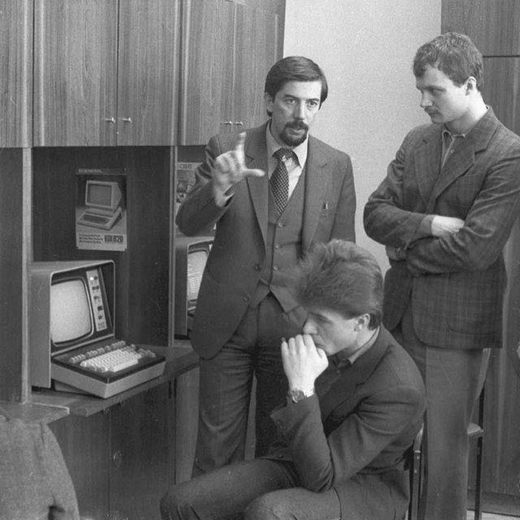

История появления ИТ-профессий в СССР
Началом развития профессии «программист» можно считать 40-е годы XX века, когда начали появляться цифровые ЭВМ. Огромную роль в развитии сыграл Джон фон Нейман – математик, физик и педагог. С его именем связывают архитектуру большинства современных компьютеров (архитектура фон Неймана), а также применение теории операторов в квантовой механике (алгебра фон Неймана). В Советском Союзе истоки профессии лежат в математических отделах, где выполнялись математические расчеты по запросу физиков, работавших над атомными проектами (1949 год – испытание первой советской атомной бомбы, 1954 год – начало работы первой атомной станции в Обнинске в Калужской области). В то время расчеты производились на настольных механических вычислительных машинах: «Рейнметалл», «Мерседес», а также с помощью арифмометров. Со сложными расчетами ситуация была тяжелее – одним из способов ускорения сложных вычислений стало их «распараллеливание», когда работой занималось сразу несколько сотрудников, передававших данные друг другу. Обычно «живыми калькуляторами» были девушки – выпускницы курсов программистов.
Вычислительную технику в проектах стали использовать позже. В 1960-х годах в науке, промышленности и обороне начали массово использовать счетно-математические машины, а недавно открывшиеся факультеты не успевали выпускать достаточное количество инженеров-наладчиков и программистов. Инженерно-техническая интеллигенция стала одной из самых престижных групп советского общества. Физик, кибернетик и инженер становятся главными интеллектуальными профессиями.
1960 - 1980 гг.
 В 1960-80-е гг научно-техническая интеллигенция (инженерно-техническая интеллигенция, либо ИТР) стала определять стиль жизни всего общества. Это были люди, окончившие политехнические ВУЗы по инженерным и естественно-научным специальностям, которые работали в НИИ, конструкторских бюро и на промышленных предприятиях в цехах. Лучшие выпускники ВУЗов и техникумов направлялись работать в оборонную промышленность и космическую отрасль. Престижным считалось попасть в систему научных институтов Академии наук (АН) СССР. В системе АН СССР в 1955 году в Москве открылся Вычислительный центр, а в 1964 году – Вычислительный центр Сибирского отделения АН СССР в Новосибирске.
В 1967 году руководством СССР было принято решения перейти от «зоопарка» архитектуры и семейств математических машин к единому стандарту, но не за счет собственных разработок, а заимствовав архитектуру IBM. Стандартизация вычислительной техники повлияла на появление почти во всех институтах и предприятиях машины серии ЕС (Единая система), а также на внедрение в промышленность автоматизированных систем управления (АСУ). К 1980-м годам различные варианты АСУ и вычислительных центров были почти в каждом предприятии и учреждении. Программистов и наладчиков ЭВМ семейства ЕС становилось больше. При этом сама профессия претерпевает изменения: специалисты широкого профиля перешли к узкому профилю. В 1970-е годы профессия «асушник» становится массовой. В 1980-е происходит ее расцвет: выпускники факультетов автоматизации уже успели получить опыт работы, сформировались коллективы на предприятиях, программисты тоже успели повысить свои компетенции – спроектировать, настроить и внедрить АСУ.
Распространение ЭВМ и появление вычислительных центров при крупных предприятиях делает профессию «программист» обычной и в чем-то даже будничной. Сейчас мы наблюдаем активную работу правительства по повышению престижа профессии.